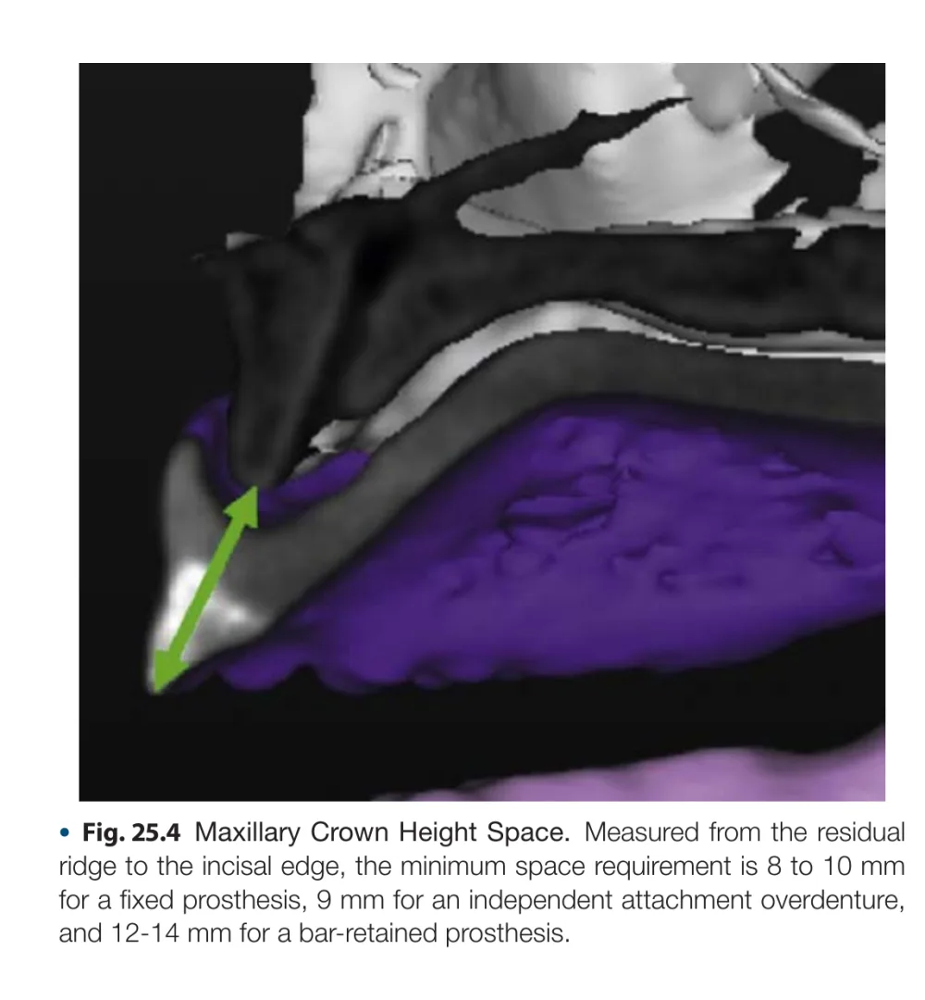

نسخه استخراجشده؛ ترجمه یا تأیید علمی انجام نشده است. وضعیت: captured
«مقدار فضای میان ریج باقیمانده و لبهی انسیزال، عامل مهمی در طرح درمان پروتز ماگزیلاست.» — یعنی در ماگزیلا این فاصله تا لبهی انسیزال سنجیده میشود.
و دستکم نگیر: این ارزیابی باید پیش از هر جایگذاری جراحی انجام شود.
و روشها: معمولاً با یک ستآپ آرتیکولهشده از قوسهای ماگزیلا و مندیبل. اما یک محدودیت مهم هست: «کست مطالعه ارزیابی دقیقی از ضخامت بافت نرم نمیدهد.» راهحل: نرمافزارهای جدیدتر که ارزیابی سهبعدی دندانها را در حداکثر اینترکاسپیشن با یک بررسی CBCT ممکن میکنند.
حالا چهار عدد فضای ماگزیلا:
و یک عدد پنجم که جداگانه اهمیت دارد: برای پیشگیری از شکست بیس دنچر یا اتچمنتها، ۲ تا ۳ میلیمتر لازم است تا استحکام کافی بهعنوان مادهی بیس دنچر فراهم شود و از جدا شدن دندانهای دنچر جلوگیری شود.
و چرا فضای کافی مهم است؟ «فضای کافی ارتفاع تاج اجازهی حجم کافی ماده را میدهد و زیبایی ایدهآلتر و توانایی بهداشت را ممکن میکند. اگر فضا به خطر بیفتد، ممکن است افزایش عوارض پروتزی رخ دهد.»
و یک تفاوت مهم دو قوس: «برای پروتز متحرک در قوس ماگزیلا، فضای بهخطرافتاده میتواند مسئلهسازتر از قوس مندیبل باشد. وقتی فضای ناکافی برای پروتز متحرک موجود باشد، ممکن است شکست پروتز یا زیبایی بهخطرافتاده نتیجه شود.»
و یک نکتهی ویژهی اوردنچر ماگزیلا:
فضای ارتفاع تاج برای اوردنچرهای ماگزیلا حیاتی است و «کمبود فضا در ماگزیلا بیشتر از موقعیت مندیبل موقعیت دندان را به خطر میاندازد».
و نکتهی کلیدی — نیاز فضایی در ماگزیلا متقارن نیست: «نیاز فضای ارتفاع تاج قدامی ماگزیلا از بُعد خلفی بیشتر است.» و اعداد: برای اوردنچر ایمپلنتی بار-ریتیند، حداقل ۱۴ میلیمتر فضای قدامی و ۱۲ تا ۱۴ میلیمتر فضای خلفی لازم است.
و دلیلش دو چیز است: «ابعاد کرونالِ بزرگترِ دندانهای قدامی» و «موقعیتهای خاص» آنها.
چرا این را باید حفظ کنی: اگر تنها عدد کلی «۱۲ تا ۱۴ میلیمتر» را به یاد بسپاری، در ناحیهی قدامی دو میلیمتر کم میآوری — و همانجاست که زیبایی و فونتیک تعیین میشود. در ماگزیلا، سختگیرترین عدد فضایی متعلق به قدام است.
و متغیر تعیینکننده: «یک متغیر معنادار این است که آیا ایمپلنتها مستقل خواهند بود یا بار-ریتیند» — چون همین یک تصمیم، نیاز فضایی را از ۹ به ۱۲ تا ۱۴ میلیمتر میبرد.

«بهطور کلی، مطالعات نشان دادهاند اوردنچر ماگزیلا و پروتز ثابت ماگزیلا کمپیشبینیپذیرتر و همراه با موربیدیتی و نرخ شکست بالاتر در مقایسه با پروتزهای قوس مندیبل هستند.»
دادهی یکم — پروتز ثابت ماگزیلا.
در یک بررسی، ۴۴۹ ایمپلنت طی ۵ سال. بقای تجمعی ایمپلنت ۹۲٫۱ درصد و بقای پروتز ۹۵٫۹ درصد. میانگین تحلیل استخوان مارجینال حدود ۱٫۲ میلیمتر در ارزیابی پنجساله.
و دو یافتهی جالب همین مطالعه: شایعترین شکایت بیماران مشکلات گفتاری بود، و شایعترین عارضهی پروتزی شکست پروتز رزینی. — یعنی در ماگزیلا فونتیک را از همان طرح درمان جدی بگیر.
دادهی دوم — اوردنچر ماگزیلا، بدترین کارنامه.
«اوردنچرهای ماگزیلا گزارش شدهاند که بالاترین نرخ شکست را در مقایسه با هر نوع پروتز دیگری دارند.» و در یک گزارش، شکست اوردنچر در ماگزیلا نُه برابر مندیبل بود.
و اعداد شکست ایمپلنت: مطالعات متعدد نرخ شکست ۲ تا ۵ درصد پیش از بارگذاری و تا ۳۰ درصد پس از بارگذاری را نشان دادهاند. برای شکست دیررس، مطالعات اوردنچر ماگزیلا نرخهای ۵ تا ۱۵ درصد را نشان دادهاند.
دادهی سوم — و این یکی یک هشدار دربارهی تغییر طرح درمان است.
در یک مطالعهی پنجساله، پروتزهای ثابت و اوردنچر ماگزیلا مقایسه شدند:
و نتیجهگیری: «نرخ شکست بسیار بالایی دیده شد، بهویژه در بیمارانی که پروتزشان از ثابت به متحرک تغییر یافت.» — یعنی تغییر مسیر از ثابت به متحرک، نشانهی یک طرح درمان ناموفق است و بدترین پیامدها را همراه دارد.
دادهی چهارم — بهای پوشش کام.
«بیشتر مسائل از پوشش کامی افزودهای ناشی میشود که یک دنچر متعارف یا اوردنچر RP-5 در مقایسه با اوردنچر RP-4 دارد.»
دادهی پنجم — هایپرپلازی.
مطالعات طولی روی اوردنچرهای ایمپلنتساپورت ماگزیلا افزایش فراوانی هایپرپلازی ماگزیلا تا ۳۰ درصد را نشان دادهاند. و در مطالعات پیگیری گذشتهنگر، هایپرپلازی در بیش از ۶۴ درصد افرادی مشاهده شد که در ابتدا برای پروتز ثابت ماگزیلا برنامهریزی شده بودند ولی بهدلیل شکست ایمپلنت درمان اوردنچر گرفتند.
و محل شایعش: «رایجترین حالت، دیده شدن بافت هایپرپلاستیک اطراف بارهای نگهدارنده است.»
الگویی که در دو داده تکرار شد: هم در دادهی بقا و هم در دادهی هایپرپلازی، بدترین پیامدها متعلق به گروهی است که از ثابت به متحرک تغییر مسیر دادهاند — ۴۶ درصد بقا و بیش از ۶۴ درصد هایپرپلازی. این گروه، نه گروه اوردنچرِ از ابتدا برنامهریزیشده، بدترین کارنامه را دارد.